MIDIstream Midistream 基本上是由比利时程序员 Jean-Michel Dewez 的团队创建并在 SXSW 2018 黑客马拉松上发布的项目。该平台为音乐作曲家、表演者、混音师、声音设计师和音乐爱好者提供了一种新
MiFuTo MFT MiFuTo 项目发挥了 NFT（Not Fungible Token）的概念，但使用 M 而不是 N，我们想在这种情况下回忆中指，中指这个词，我们不希望在 N 后面加上 NOT否定。
miime ERC-721 代币的市场。目前我们支持 My Crypto Heroes、Crypto Spells、Gods Unchained、Brave Frontier Heroes、Sorare、C
Milk & Honey Miner 欢迎来到 🥛 和 🍯 俱乐部！ Milk & Honey BNB Miner - Milk & Honey 俱乐部的官方社区矿工！ 该项目的重点是社区发展、矿池强度的持久性和矿池奖励的稳定性。开发者。团队实现这
Milk Cow 什么是奶牛？ Milk Cow 是 FTM 上的 BakedBeans 分支，具有创新性的调整。它为协议中的每笔 FTM 存款提供 8% 的每日回报。 随着奶牛的突然消失，人类的牛奶已经枯竭。每个人都不
MilkShakeSwap MilkshakeSwap 是一种由 Binance 智能链驱动的 DEX 和 AMM，允许任何人高效安全地交换 BEP-20 代币。该平台可与 Uniswap 相媲美，因为它提供了与流动资金池相结合的去中心化交易体验。 MilkshakeSwap
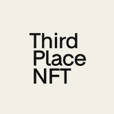 NFT Third Place NFT Third Place 是投资现实世界艺术品的市场，包括杰作的部分所有权。得益于Third Place NFT平台，绝对任何人都可以成为价值千万美元艺术品的版权拥有者。 欢
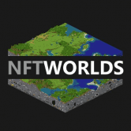 NFT Worlds 每个 NFT 世界都是一个可探索的、无限的世界，可以构建到任何你能想象到的东西中。 NFT Worlds 与 Minecraft 兼容、大型多人游戏、将拥有开发人员 API、去中心化等等。 发
NFT YARD NFT Yard它是在Polygon网络 ( MATIC ) 上开发的NFT或不可替代代币的去中心化应用程序 ( DAPP ) 。它是一个 NFT 工厂和市场，提供完全去中心化的机制来
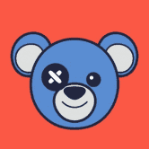 NFTheo NFTheo 是一组独特的数字收藏泰迪熊。每个 Theo 都是独一无二的。 只有 3000 个 Theos，由多个主题集和动画传奇 Theos 组成。 NFTheo 是存储在区块链上的 3000 个独特泰迪熊的集
NFTHive NFTHive 是一个 WAX.io 市场 - 浏览 NFT 市场报价、捆绑和拍卖。 检查您的库存并轻松出售 NFT。 使用批量工具一次出售多个 NFT、购买商品列表或编辑您的活动列表。 访
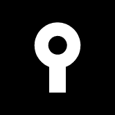 NFTKEY Marketplace 解锁对数字收藏品的快速便捷访问，并探索、购买和销售来自不同区块链和艺术家的 NFT。 我们的链上市场支持多个区块链：BNB Smart Chain、Fant
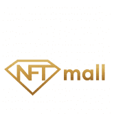 NFTmall NFTmall - 具有 NFT 物化服务的多链 NFT 市场和启动板。 一个强大的多链 NFT 平台，赋予创造力。它让 NFT 创作者在赚钱的同时享受乐趣。NFTmall 不仅仅是一个市场，
NFTMart NFTMart 是一个新的 Hive dApp，它允许用户更轻松地买卖 Hive NFT，支持 Hive 的原生货币：Hive 和 HBD。 NFTMart 让卖家和买家可以轻松快速、安全地将 NFT 换成货币，
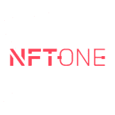 NFTone 世界上第一个基于 Tron 的 NFT 市场。 安全地买卖独特的数字收藏品。保证所有 NFT 市场的最低交易成本。 用 TRX 支付。通过 CEX.IO 和 KuCoin 使用您的 TronLink 账户购买 TRX。 高度安全
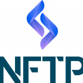 NFTPOSSION #Nftpossion (#NFTP) 是一个 NFT 社区驱动的项目，具有#MetaGaming 功能。大约 21% 以上的#NFTPTotal 供应在铸币过程中被烧毁，代币在每笔交易中经常被烧
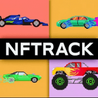 NFTrack NFTrack 是一款赛车游戏和 NFT 收藏，拥有 10,000 辆独特的汽车。所有 10,000 辆汽车都是随机生成的，使用数百种不同的特征组合在一起，创造出独一无二的收藏汽车。每辆 NFTrack 赛
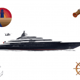 NFTy Yacht Club NFTy 游艇有 5 种尺寸类别中的 1 种，该系列中有 20 种型号。NFTy Yacht 所有权附带超级游艇桥的使用权。超级游艇桥是 NFTy 游艇所有者在 Discord 上的专属聚会场所。它是
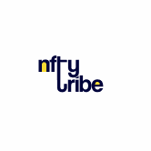 NftyTribe NftyTribe 是一个多链 NFT 市场，促进了 NFT 交换的下一级体验。为了充分发挥这种潜力，我们决心将实用性放在首位！ 这些是 NftyTribe 的一些主要功能 - NFT 质押： NftyTribe 为创作者提供
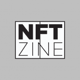 NFTZine NFTZine #001 是 Art101的第一个1,000 个独特、交互式和可打印的 ETH NFT 杂志的集合。 Art101 的 NFTZine 是一个交互式和可打印的 NFT Zine。NFTZines 是可生成
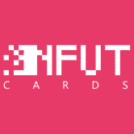 NFUT Cards NFUT Cards 是一款 PVP 足球游戏，围绕足球经理元界创建，以区块链技术和 NFT 集合作为游戏资产，玩家可以通过游戏进行游戏并赚取代币，并通过代币 $NFUT 为 NFUT 生态系统做
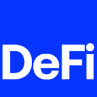 NGUYENPHUNHO 赚取 50000 ETH 只需要 0.5 ETH + gas 费。10 年后高达 100000 ETH 的潜在收入重复高达 4 个级别。 REAL NGUYEN PHU NHO GLOBAL AUTOPOOL 全球单线自动池超快速赚取 99400+ ETH
NICEE NICE 是一个 SushiSwap 分叉，总供应量在 69 到 420 之间，没有预挖。 一旦供应量超过 420，排放量将自动减少 100 倍，并且燃烧率增加到交易的 20%。一旦供应量低于 69
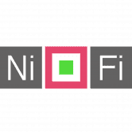 NiFi Club Everscale 区块链上的创新 NFT 市场，可让您创作和销售艺术品。交易成本低，速度快。 NiFi Club 是第一个引入革命性创新的平台——代言。 如果我们结合两个 NFT 会发生什么？
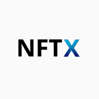 NIFTEX NIFTEX 促进了不可替代代币 (NFT) 的部分所有权。NIFTEX 平台支持将 NFT 划分（“启动”）为符合 ERC20 标准的可替代部分。我们将这些可替代的部分称为“碎片”。碎
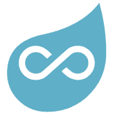 Nifty Chars NiftyChars .com 是一个交易者可以购买、出售、交易和讨论数字虚构人物（例如福尔摩斯）的市场。它似乎用以太坊代币模仿稀有的收藏卡，并且这些代币中的每一个都遵
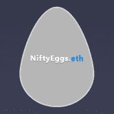 NiftyEggs 通过锁定 ERC20 代币来种植 NFT！ 您可以创建限量版 NFT 来奖励代币社区锁定他们的代币一段时间。或者你可以锁定你的代币并农场已经创建的 NFT。 种植一些 NFT
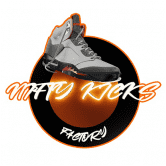 NiftyKicks Factory Nifty Kicks 是首个在 Wax 区块链上建立工厂的 P2E 游戏。它从一开始就考虑到了社区，它有一个强大的代币经济学模型，我们认为它会在很长一段时间内充满乐趣和回报。
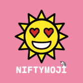 NIFTYMOJI 将 3,186 个 EMOJI 视为不可替代的代币。NFT 遇上 DeFi！☑ 有限的 NIFTYMOJIS：区块链上只会发布 3,186 个 Niftymojis（基于 OpenMoji 12.0）！☑
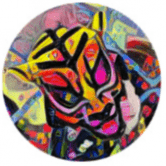 Niftyriots NiftyRiots 为您带来一个以前卫技术为正义事业打造的 NFT 系列。我们的最终目标是由来自边缘群体的艺术家在 Metaverse 中展示艺术。我们应用深度神经网络让世界了解不同的现
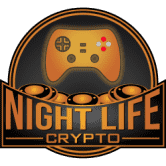 Night Life Crypto Night Life Crypto 是一个游戏平台，它将区块链游戏的质量提升到应有的水平。该平台正在制作高质量的平台和街机游戏，这些游戏将复制 Steam 和加密之外其他平台上游戏的
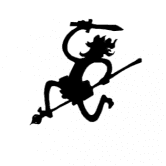 NikaSwap 代币信息 代币名称： NIKA 合约地址： 0x9716bce1d79c00b6585697d81ef804bc12191f90 总供应量：1,000,000,000 尼卡分配： 分配按从大到小的顺序排列： 代币销售： 30% (300,000,000 NIKA) 流动资金池： 30%（
Nine Chronicles 你将如何探索九界？ Nine Chronicles 是一款奇幻 MMORPG，设置在一个由突破性技术驱动的广阔奇幻世界中，让玩家可以自由地玩他们想要的游戏：探索、制作、采矿